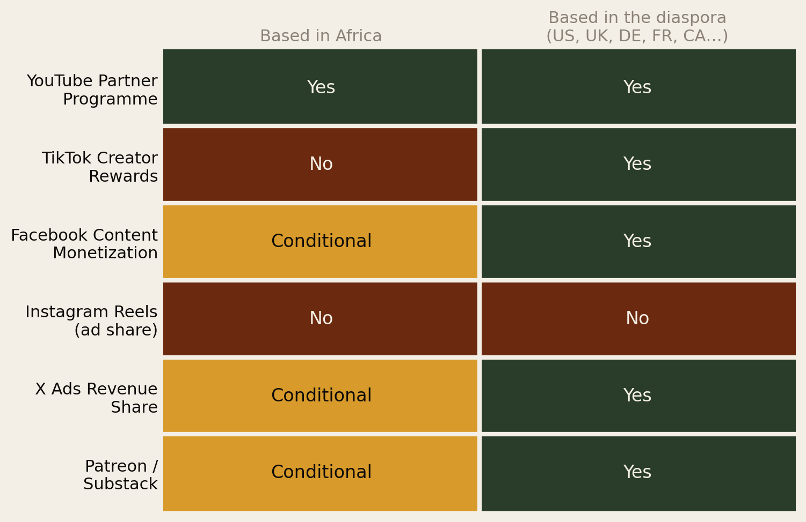
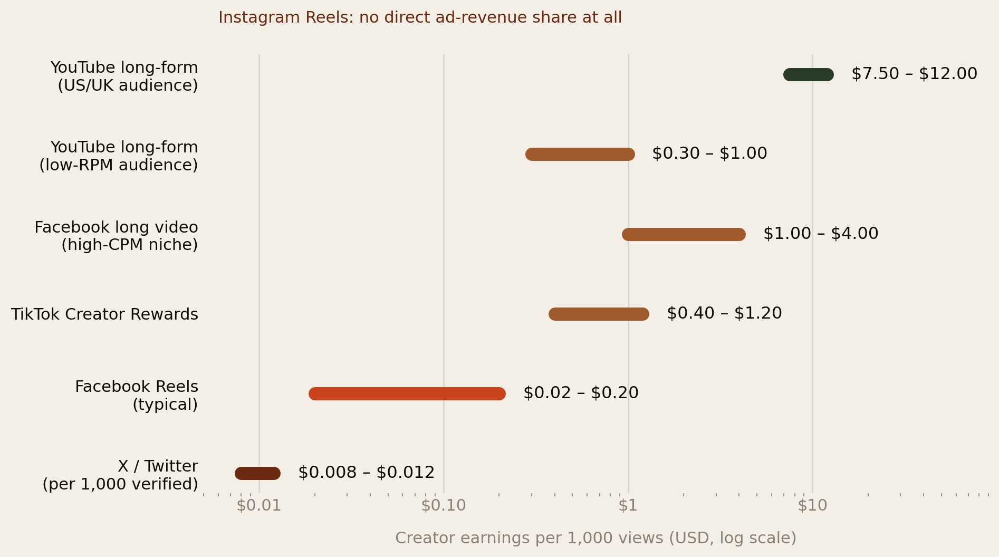
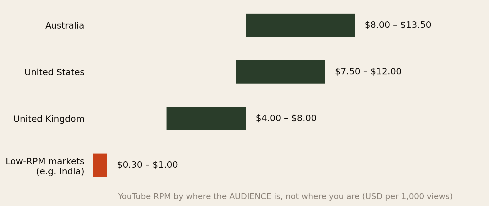
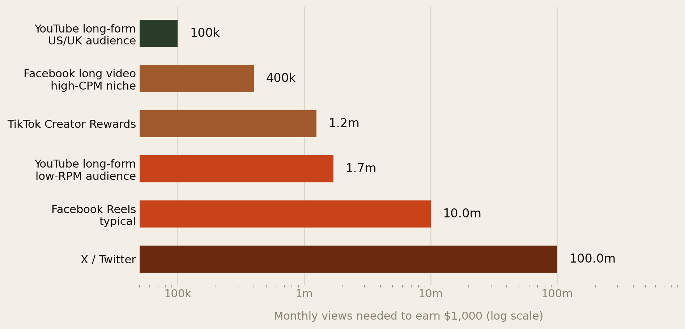
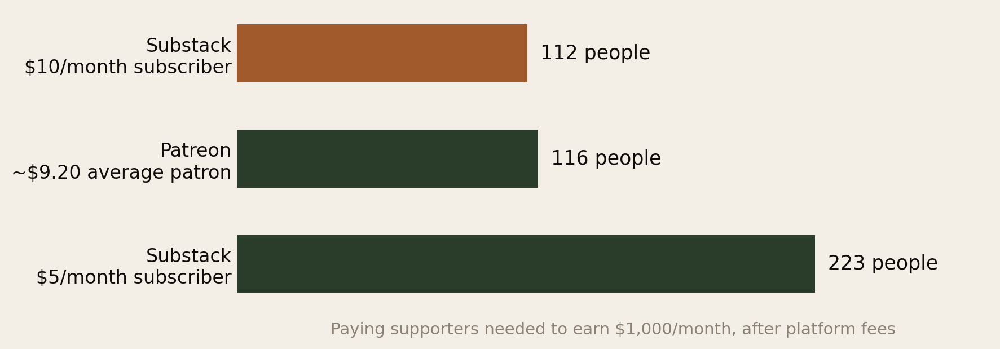
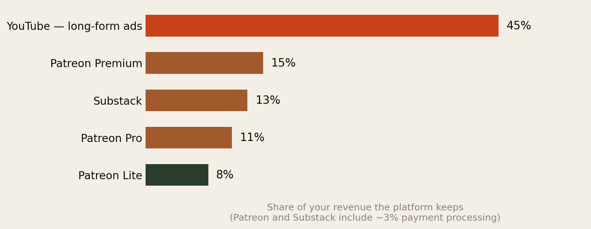
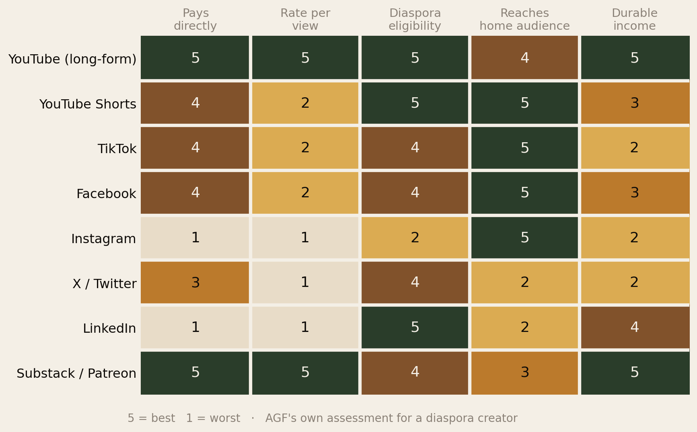

Your Address Pays Better Than Your Following.
Which social platforms actually earn Africans abroad money — and why the diaspora holds a structural advantage over creators back home that almost nobody is deliberately using.
Section 01Executive Summary
Almost every guide to making money online tells you to grow your following. That is the wrong variable. For an African living abroad in 2026, income from social media is decided mostly by two things you can choose deliberately on day one: which platform you post to, and which country your audience watches from. Follower count is a distant third.
The gaps are not marginal. They are order-of-magnitude:
- The same 100,000 views can be worth $1,000 or $50, depending entirely on platform and audience geography. YouTube long-form to a US or UK audience pays roughly $7.50–$12 per 1,000 views; Facebook Reels typically pays $0.02–$0.20.
- TikTok’s payout programme does not operate in Africa. The Creator Rewards Program runs in roughly ten countries — the US, UK, Germany, France, Japan, South Korea, Brazil, Mexico and a few others. None of them are African. If you live in London or Toronto, you are eligible. Your cousin in Lagos, posting the same video to the same audience, is not.
- Instagram pays no direct ad-revenue share on Reels at all. It is a brilliant place to build an audience and a poor place to be paid by the platform.
- X is the worst-paying major platform by a distance — roughly $8–$12 per million verified impressions. To clear $1,000 a month from X ad revenue alone, you would need volumes only the top fraction of a percent of accounts ever see.
- 112 people paying $10 a month beats 100,000 monthly views on almost any platform — and it is a far more reachable target for a diaspora creator with a specific, committed audience.
The diaspora is sitting on a payout eligibility that people back home cannot access, serving an audience that Western advertisers pay a premium to reach. Very few people are using both facts on purpose.
Section 02The Two Numbers That Decide Everything
Strip away the noise and creator income from any ad-funded platform is one multiplication:
Views × RPM = income.
RPM — revenue per mille — is what you actually receive per 1,000 views after the platform takes its cut. It is not CPM, which is what the advertiser pays before the split, and confusing the two is the single most common way creators overestimate their earnings.
Almost all advice concentrates on the first number, because views feel like the thing you control. But RPM varies by a factor of about 1,000× across platforms and audiences, while realistic view counts for an individual creator vary by maybe 10×. The variable nobody optimises is the one that matters most.
RPM is set by three things, in order of impact:
- Which platform. A view is a completely different financial event on YouTube than on X.
- Where your audience watches from. Advertisers bid far more to reach a viewer in Sydney than one in Nairobi. This is about the audience’s market, not their merit.
- What your content is about. Finance, insurance, software and B2B command the highest advertiser bids; entertainment and general lifestyle the lowest.
Section 03Who Can Even Get Paid
Before rates, there is a prior question that most comparisons skip entirely: are you allowed into the payout programme at all? Monetisation programmes are geographically restricted, and the restrictions do not follow where your audience is — they follow where you are.

The TikTok row is the important one. As of 2026 the Creator Rewards Program operates in roughly ten countries — the United States, United Kingdom, Germany, France, Japan, South Korea, Brazil, Mexico, with Italy and Spain also cited. No African country is on that list (Creators Agency; Multilogin).
Read what that means carefully. A Nigerian creator in Manchester and a Nigerian creator in Lagos can post the identical video, to the identical audience, and get identical views. One gets paid by TikTok. The other does not. The difference is a postcode.
This is a genuine, legal, structural advantage the diaspora holds — and it is one of the very few places where the migration trade-off pays a dividend rather than charging a fee. It is also, quietly, the reason a lot of “African creator success” stories turn out to involve someone living in Atlanta or Croydon.
A warning attached to it. Some creators back home use VPNs or foreign-registered accounts to get around geographic restrictions. This violates platform terms, and the usual outcome is not a warning but permanent demonetisation and forfeited earnings. If you are in the diaspora, you do not need to do any of this — and if you are advising family at home, the honest advice is to build on platforms that do pay them (YouTube) rather than risk a ban on one that does not.
The one platform that is genuinely open almost everywhere is YouTube. The Partner Programme operates across Nigeria, Kenya, South Africa, Ghana, Egypt and much of the continent. That single fact does a lot of work in the rest of this report.
Section 04What Each Platform Actually Pays

YouTube long-form — the only platform that reliably pays real money
US RPM sits around $7.50–$12, and the whole system is built for durability: videos keep earning for years, the audience is searchable, and the Partner Programme is open in most African countries as well as every diaspora country. Finance, insurance and B2B content commands the top of the range; US CPMs in those niches run $20–$38 and occasionally above $50 (Lenos; Fluxnote).
YouTube Shorts — the same platform, a fraction of the rate
Shorts are paid from a shared pool rather than per-video ad revenue, and the effective RPM is a small fraction of long-form. They are a distribution tool that feeds subscribers to your long-form catalogue. Treating Shorts as an income stream in themselves is one of the most common and expensive mistakes.
TikTok — good reach, modest pay, closed to Africa
The Creator Rewards Program pays roughly $0.40–$1.20 per 1,000 views, and requires 10,000 followers, 100,000 views in the previous 30 days, and videos over one minute. Reach on TikTok is unmatched for a standing start — but the money is modest and, as Section 03 covers, the door is shut unless you live in one of about ten countries.
Facebook — the one most diaspora creators underestimate
Meta consolidated its programmes into a single Content Monetization Program in 2025, bundling in-stream ads, Reels ads, subscriptions, Stars and bonuses into one payout (Fluxnote). The rates split sharply by format: Reels typically return $0.02–$0.20 per 1,000 views, while longer video in high-CPM niches with a Western audience can reach $1–$4.
Facebook deserves more attention from diaspora creators than it gets, for an unglamorous reason: it is still where the older African audience is, at home and abroad. Diaspora community groups, church networks, hometown associations and market pages remain overwhelmingly Facebook-native. If your content is aimed at people over 35, Facebook is where they already are.
Instagram — no ad share, and that is the whole story
Instagram Reels carries no direct ad-revenue share. Creator income comes through invite-only bonus programmes, brand deals, affiliate links and Shopping. Instagram is a superb audience-building and brand-deal shopfront and a non-existent ad-revenue business. Plan accordingly: build there, earn elsewhere.
X / Twitter — effectively unpaid
Ads Revenue Sharing requires an X Premium subscription, a verified account, at least 500 followers and roughly 5 million impressions over three months. The payout is approximately $8–$12 per million verified impressions (Kompozy; Influencer Marketing Hub), and it is weighted toward engagement from other Premium users rather than raw reach. Sources disagree on the exact volume needed to clear $1,000 a month, but they agree on the conclusion: treat X ad revenue as a bonus, never as income. X remains valuable for reach, reputation and inbound opportunities — just not for its cheque.
LinkedIn — pays nothing directly, and may still pay you best
LinkedIn has no creator ad-revenue programme at all. For a professional in the diaspora, it is nonetheless frequently the highest-earning platform on this list, because it converts to consulting work, speaking fees, job offers and B2B clients — income that never appears in a creator-fund dashboard. If you are an accountant, engineer, nurse or founder, an hour on LinkedIn is very often worth more than an hour on TikTok.
Section 05The Geography Multiplier
Now the part that changes strategy. Your RPM is set by where your audience sits, not where you sit.

One widely cited illustration: 100,000 views from a US audience might earn about $800; the same 100,000 views from India, under $100 (Fluxnote). African-audience RPMs are less well documented than India’s but sit broadly in that lower band, for the same structural reason: advertiser demand and purchasing power, not audience quality.
This produces an uncomfortable but important conclusion for diaspora creators. A channel about Africa, made for viewers in Africa, is the hardest possible way to earn from advertising. Not because the audience is less valuable as people — because the ad market prices them lower.
The diaspora sweet spot is content about the African experience, made for people living in the West. Same culture, same authority, ten times the ad rate.
This is not a call to abandon home audiences. It is a call to be deliberate about which of your formats is the ad-funded one. Diaspora-facing content — navigating visas, sending money home, raising children between cultures, African food in Western supermarkets, professional life as an immigrant — is watched in London, Toronto, Houston and Berlin, and priced accordingly. Home-facing content can then be monetised through direct payment, sponsorship or products instead.
Section 06What $1,000 a Month Actually Takes
Rates in the abstract are hard to feel. Here is the same information as a workload.

The spread is the entire argument of this report. 100,000 views a month is a serious but achievable target for a focused creator with a good niche — roughly 25,000 views a week, or one solid video. Ten million monthly views is a full-time media operation. One hundred million is a national broadcaster.
All three of those numbers pay the same $1,000.
Two things follow. First, a diaspora creator who picks YouTube long-form with a Western audience is starting the race a hundred metres from the line while a Facebook Reels creator starts ten kilometres back. Second, if you are already getting 300,000 monthly views on TikTok and earning a few hundred dollars, the problem is not your content. It is your platform.
Section 07The 112-Person Shortcut
Everything above assumes you are paid by advertisers. There is a second model, and for most diaspora creators it is both faster and more reliable: being paid directly by the people who value your work.

Put the two charts side by side. You need 100,000 monthly YouTube views, or 112 people who pay you $10 a month.
For a diaspora creator, the 112 is usually the easier number. Your audience is not a general public — it is a specific group of people with a specific, expensive, poorly-served problem: how to move, how to stay legal, how to get credentials recognised, how to send money without losing 8% of it, how to raise children who understand where they came from. People pay for that. They scroll past entertainment.
The ceiling is real too, not theoretical: Substack’s top 500 creators average around $840,000 a year in subscription revenue, and Patreon’s top 500 around $620,000 (SocialSeconds). Those are the extreme top of the distribution and nobody should plan around them — but they establish that the model scales.
Substack suits writing and analysis; Patreon suits video, audio and community. Both let you own the relationship, which is the part no algorithm can take away. A channel is rented. An email list is owned.
Section 08What the Platform Keeps

YouTube keeps 45% of long-form ad revenue — the highest cut on this chart by a wide margin. Substack takes a flat 10% plus processing; Patreon runs 5%, 8% or 12% by plan, plus processing.
But a take rate is meaningless without a base. 45% of a large number beats 8% of nothing, which is why YouTube still wins on absolute earnings for most creators with real reach. The take rate matters when you are choosing between two models that both work — not as a reason to avoid the platform that actually pays.
One practical note for diaspora creators specifically: check that the payout rail reaches you before you build on a platform. Programmes that pay via Stripe or direct bank transfer are straightforward from most Western countries and considerably more complicated from several African ones. This is another quiet advantage of a diaspora address, and another reason to be the family member who sets up the account.
Section 09The Diaspora’s Real Edge
Four advantages, all structural, all under-used:

- You are eligible where home is not. TikTok’s programme, Meta’s bonus schemes and most payment rails work from your address and not from Lagos or Nairobi. This is the single most concrete advantage on the list, and it expires the moment those programmes expand — so it is worth using now.
- Your audience is priced in hard currency. Diaspora-facing content is watched from high-RPM markets. You get Western ad rates for African subject matter — a combination almost nobody else can offer credibly.
- You have authority nobody can fake. You have actually done the visa run, the credential conversion, the first winter, the awkward call home about money. Creators back home cannot make that content truthfully, and Western creators cannot make it at all.
- Your audience has money and an expensive problem. The diaspora spends on remittances, flights, visas, school fees and legal advice. That makes it commercially valuable to advertisers, and it makes people willing to pay directly for genuinely useful help.
A Ghanaian nurse in Manchester explaining NMC registration to other African nurses is sitting on a higher-value audience than a general lifestyle channel with ten times the followers.
Section 10What Doesn’t Work
An honest list, because most creator advice is written by people selling courses.
- Posting the same clip everywhere and hoping. The rate difference between platforms is roughly 1,000×. Cross-posting is fine as distribution; it is not a strategy.
- Chasing followers instead of RPM. A 50,000-follower Instagram account can earn less from the platform than a 2,000-subscriber YouTube channel in a finance niche. Instagram pays no ad share.
- Building your whole business on short-form. Shorts, Reels and TikToks pay a fraction of long-form and stop earning almost immediately. They are the shop window, not the shop.
- Waiting for brand deals. They arrive after you have an audience with a clear identity, not before, and they are unpredictable income. Build a floor you control first.
- VPNs and foreign accounts to fake eligibility. Against platform terms; the usual penalty is permanent demonetisation and forfeited balance.
- Assuming virality equals income. Ten million Facebook Reels views is roughly $1,000. One well-targeted YouTube video with 100,000 views is the same money and it keeps earning next year.
Section 11The Playbook
- Pick one long-form home and one short-form feeder. For almost every diaspora creator that is YouTube long-form as the home, plus TikTok or Reels as the feeder. The feeder builds reach; the home earns money and compounds.
- Aim your ad-funded content at diaspora viewers, not home viewers. Same expertise, same culture, roughly ten times the RPM. Serve the home audience too — just do not expect advertisers to pay you properly for it.
- Choose the highest-value niche you can speak to honestly. Money, immigration, careers, credentials, health and business carry the highest advertiser bids and the highest willingness to pay directly. If you have professional expertise, that is your niche — not a general vlog.
- Open the direct-payment channel at 1,000 followers, not 100,000. Substack for writing, Patreon for video and community. You need about 112 paying people, not a hundred thousand viewers, and small audiences convert better than large ones.
- Use your eligibility while it is an advantage. If you are in the diaspora, get the TikTok and Meta monetisation accounts set up in your own name and location now. That advantage narrows every year these programmes expand.
- If you are a professional, do not ignore LinkedIn. It pays nothing per view and frequently out-earns everything else through consulting, speaking and clients.
- Collect emails from day one. Every platform in this report can change its rates or close its programme without warning — Meta shut down its Reels Play bonus in August 2025. An email list is the only asset here you actually own.
- Track RPM, not views. Look at earnings per 1,000 views monthly, per format and per audience country. It is the number that tells you what to make more of.
Section 12Method & Limits
What this report is: a comparison of published creator-monetisation rates and eligibility rules as at 11 August 2026, read specifically for someone from Africa living abroad.
Things that could move the numbers:
- RPM figures are ranges, not guarantees. Actual earnings vary enormously by niche, season (Q4 is always highest), audience country mix and format. Treat every figure here as a band, not a promise.
- Published RPM data is mostly industry-aggregated, not audited. Platforms do not publish per-country creator payout rates, so these come from analytics firms and creator-reported data. They are directionally reliable and individually imprecise.
- Facebook rates in particular vary by an order of magnitude between Reels and long video, and sources conflict. We have given both bands rather than a single number.
- X’s payout basis has shifted toward engagement from Premium users, so impression-based estimates are less reliable than they were. Sources disagree on what monthly volume yields $1,000; we have said so rather than pick one.
- African-audience RPM is poorly documented. We use India as the documented low-RPM comparator and say so, rather than publishing an African figure we cannot source.
- Eligibility lists change. TikTok has expanded its programme repeatedly. Verify current country availability before building a plan around it.
- The Fig 7 scorecard is AGF’s own judgement, not a measured index.
- The $1,000 calculations use rate midpoints and exclude tax, equipment, software and time. They measure gross platform revenue, not profit.
Principal sources: Lenos and Fluxnote on YouTube CPM/RPM by country and niche; Creators Agency and Multilogin on TikTok Creator Rewards eligibility and rates; Fluxnote and Meta on the Content Monetization Program and Creator Fast Track; InfluencerFee on Instagram Reels; Influencer Marketing Hub and Kompozy on X Ads Revenue Sharing; SocialSeconds and Substack on subscription platform fees and creator earnings.
↓ Download the full 10-page PDF edition
Companion reports: The Visa Treadmill and Where the Door Is Actually Open.
The diaspora helps the diaspora.
Africa Global Forum is a peer network for Africans abroad — help each other, sit together, and bounce ideas. The research above is part of an open library. The Forum itself is by application.